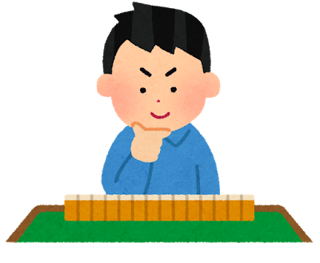
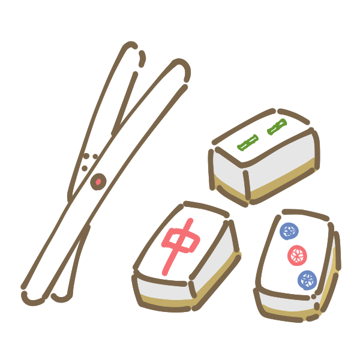

Don't worry - the rules will be explained carefully in English!
Using Japanese is also okay.
Do you want a new hobby? Do you want to make new Japanese friends?
Are you looking for a way to understand Japan more?

楽しくお話ししながら健やかマージャンで白熱しませんか？まったくの初心者、お一人様歓迎
場所：玉川台区民センター １階 (世田谷区玉川台1-6-15) 第3会議室 用賀駅徒歩6分
対象：年齢、男女問わず（禁煙です）
From 1 pm to 3 pm Entry fee 1,000 yen with drink
From 3 pm to 5 pm Entry fee 1,000 yen with drink
参加費：1部につき1,000円、飲み物、お菓子付き
1部：13時〜15時
2部：15時〜17時
初めての方は13時〜17時まで1,000円
We use a three-person system that makes games more exciting.
Mahjang is said to be useful in preventing dementia.

賭けない、吸わない、飲まない 麻雀の相手探し、仲間づくり、健康づくり
より白熱の3人制、ルールは丁寧にご説明しますのでご安心ください。マージャンは認知症予防にもなると言われています。
※Due to the limited number of places, priority will be given to reservations.
Sponsor：Peach Coral Reef
※定員に限りがあるため先着予約優先とさせていただきます。
主催：ピーチコーラルリーフ Peach Coral Reef
ピーチコーラルリーフ（PCR）とは？
これからを生きる子どもたち、ベテランの方々にいきがいを持って輝いてほしい。多岐にわたる活動を通して社会貢献を目指す団体です。
What is mahjong？
Mahjong is a tile-based game developed in China but popular around the world. The goal of the game is to get "mahjong" which consists of getting all of your tiles into a special position.

Location：Tamagawadai Kumin Center Setagaya,Tamagawadai,1 chome-6-15
玉川台区民センター 第3会議室 Tamagawadai, Setagaya-ku 東京都世田谷区玉川台1-6-15
Google maps link: https://goo.gl/maps/tHxEr69hpT52
It is about a six minute walk from Yoga Station
From Yoga station - take the south exit When you exit the South exit stairwell (there's a Mos burgers on your left), turn left at the top of the stairwell and follow the main road under the giant overhead street (there's a bike parking place). After the train tracks you will walk past the fire station and the first set of traffic lights. At the next street after the traffic lights, turn left (there's a building that says Foyeur). Then walk about 2-3 minutes straight, and you'll see the Kumin Center on your right.